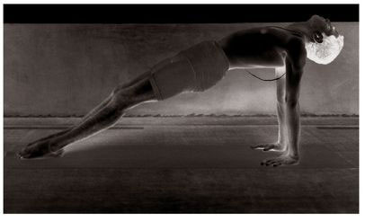

13. ARDHA BADDHA PADMA PASCHIMATTANASANA
There are twenty-two vinyasas with this asana, the 8th and 15th of which constitute its states.
METHOD
To begin, follow the first six vinyasas of the first Surya Namaskara. Next, sit as in the 7th vinyasa of Paschimattanasana, stretch the left leg out, place the right leg on the left thigh, pressing the right heel into the navel, bring the right arm behind the back and grasp the big toe of the right foot, take the left foot with the left hand, straighten the head and chest, and do puraka slowly; this is the 7th vinyasa. Then, doing rechaka slowly, place the chin on the outstretched left leg, and do puraka and rechaka as much as possible; this is the 8th vinyasa. Next, doing puraka slowly, lift only the head; this constitutes the 9th vinyasa. Then, unfolding the legs and crossing them, as in Paschimattanasana, lift up the entire body with the strength of the arms; this forms the 10th vinyasa. Next come the 11th, 12th, and 13th vinyasas, which resemble the 4th, 5th, and 6th vinyasas of Paschimattanasana. We are now back at the 7th vinyasa of the first Surya Namaskara. Doing puraka, jump the legs through the arms on the strength of the hands alone, stretch the right leg out, place the left leg on the right thigh, grasp the left big toe with the left hand from behind, take the right foot with the right hand, straighten the head and chest; this is the 14th vinyasa. Then, doing rechaka, place the chin on the right knee, which is stretched out flat, and do puraka and rechaka slowly, as much as possible; this is the 15th vinyasa. Then, doing puraka, lift the head only; this forms the 16th vinyasa. Next, unfold and cross the legs, lift the entire body up with the hands, doing puraka, and stay in this position; this constitutes the 17th vinyasa. Then, follow Paschimattanasana for the next five vinyasas (18th–22nd ).
PURVATANASANA

BENEFITS
The practice of this asana alleviates the enlargement of the liver and spleen. It also cures abdominal distention due to bad food and activities; the spoiling of the tissues due to a continually provoked vata; and weakness due to an inability to take food.³ Constipation is also cured, and the operation of the bowels is rendered easy.